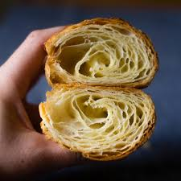
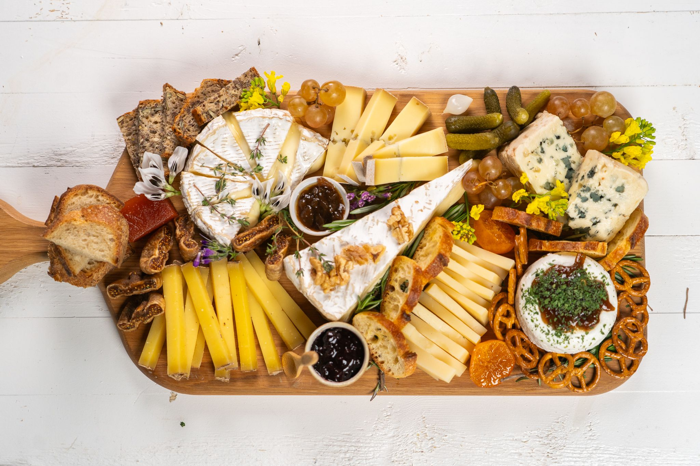
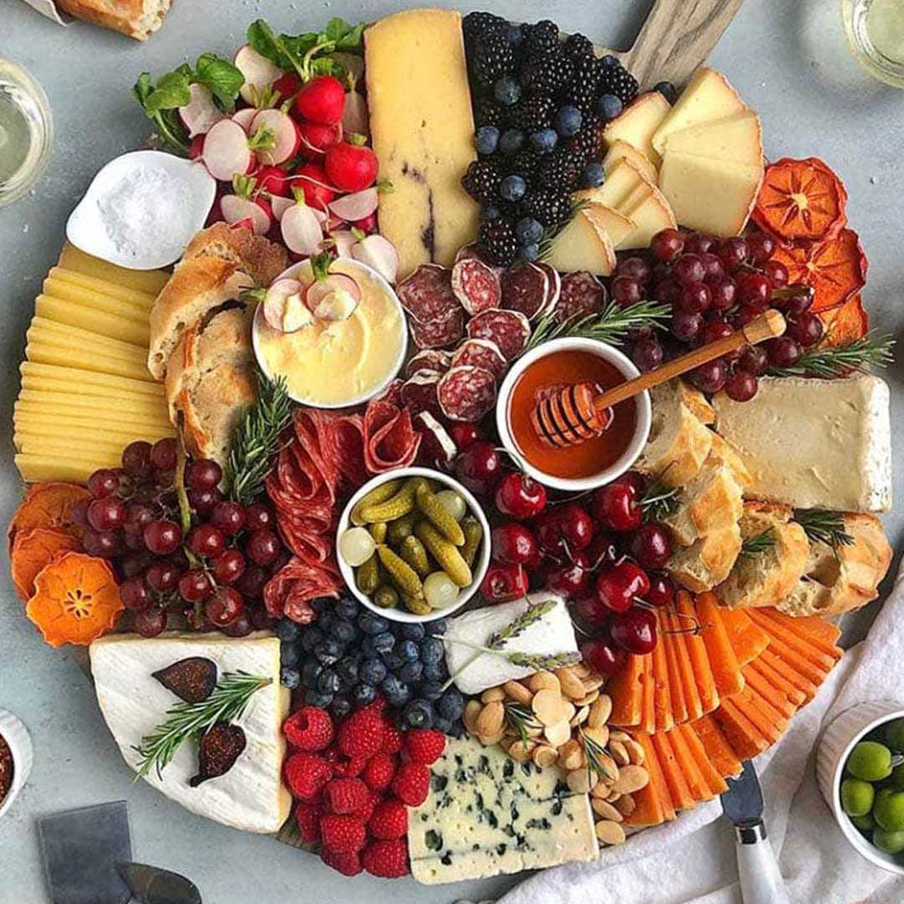
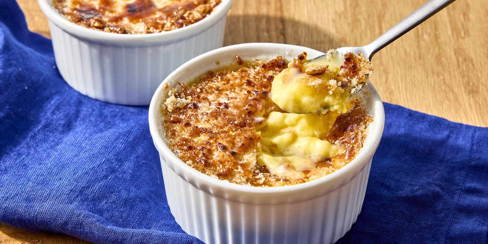
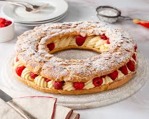
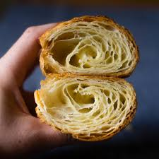
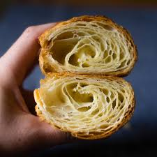
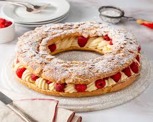
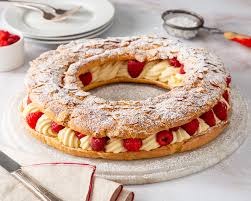

The French baguette isn’t just bread — it’s basically a national treasure. With its crispy golden crust and soft, airy center, the
baguette is a daily ritual in France. You’ll see people carrying one under their arm like it’s the most normal thing ever… because
it is.
What makes it iconic is that traditional baguettes follow super strict rules: just flour, water, salt, and yeast — nothing fancy,
just pure craft. Fresh ones are baked several times a day, so grabbing a warm baguette from a local boulangerie is part of everyday
life.
It’s simple, it’s timeless, and honestly, it’s one of the easiest ways to taste the real spirit of France. If you want to experience
France like a local, start with a fresh baguette and thank me later.
Flaky Croissants

Croissants are basically the buttery royalty of French pastries. Light, flaky, and impossibly soft inside, they’re the kind of treat
that makes mornings in France feel a bit magical. Each layer is created through a careful folding process that gives croissants their
signature airy texture — it’s legit craftsmanship, not just baking.
You’ll find them in every boulangerie, usually still warm in the early morning. Pairing a fresh croissant with a coffee is a whole
vibe — simple, traditional, and honestly unbeatable. It’s one of those foods that shows how the French turn even the smallest things
into an art form.
The Cheese Platter


A French cheese platter is literally a whole experience, not just a snack. France is famous for having hundreds of cheese varieties —
soft, hard, creamy, strong, mild… you name it, they’ve got it. A proper cheese platter usually mixes different textures and flavors:
something soft like Brie, something stronger like Roquefort, maybe a classic Comté, plus a few regional gems you discover along the way.
It’s traditionally served after the main meal, which feels kinda fancy but also super homey at the same time. Pair it with fresh bread
or fruit and you instantly get that elegant, timeless French dining vibe. Honestly, it’s one of the easiest ways to taste the diversity
of French culture in just a few bites.
Crème Brûlée

Crème Brûlée is one of those desserts that feels both classy and comforting — a smooth vanilla custard with that iconic caramelized
sugar crust on top. The best part is cracking the warm, crispy layer with your spoon to get to the cool, creamy inside… it just hits
different.
This dessert has been part of French culinary tradition for centuries, and it’s often served in small ramekins to keep things elegant
and simple. Rich, sweet, and timeless, Crème Brûlée is basically the definition of “treat yourself” in French cuisine.
Paris Brest

Paris-Brest is a classic French pastry that looks like a giant, buttery wheel and tastes even better than it looks. Made from choux
pastry and filled with rich praline-flavored cream, it was originally created in 1910 to honor the Paris–Brest–Paris bicycle race —
hence the circular shape!
It’s sweet, nutty, and utterly indulgent, making it one of the most beloved desserts in France. A slice of Paris-Brest is basically
a bite of history and French pastry mastery all in one.
Macarons
Macarons are the colorful, delicate, and utterly irresistible French treats that have stolen hearts worldwide. These small, round
confections are made from almond flour, egg whites, and sugar, and sandwiched together with luscious fillings like ganache,
buttercream, or jam.
What makes macarons special is not just their pastel beauty, but their perfect balance of crisp shell and soft, chewy interior.
They’re often associated with Parisian elegance, afternoon tea, and those little moments of pure indulgence that feel fancy yet fun.
Trying a variety of flavors is basically a must-do when visiting France!

 


 
